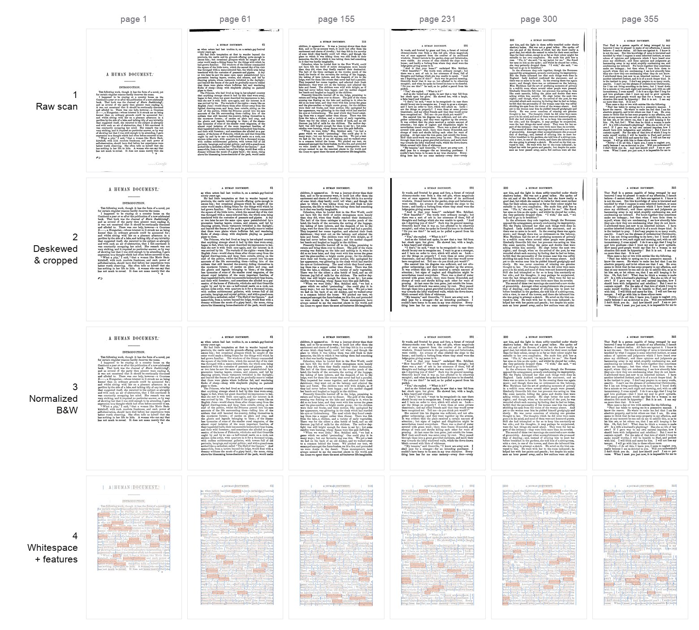
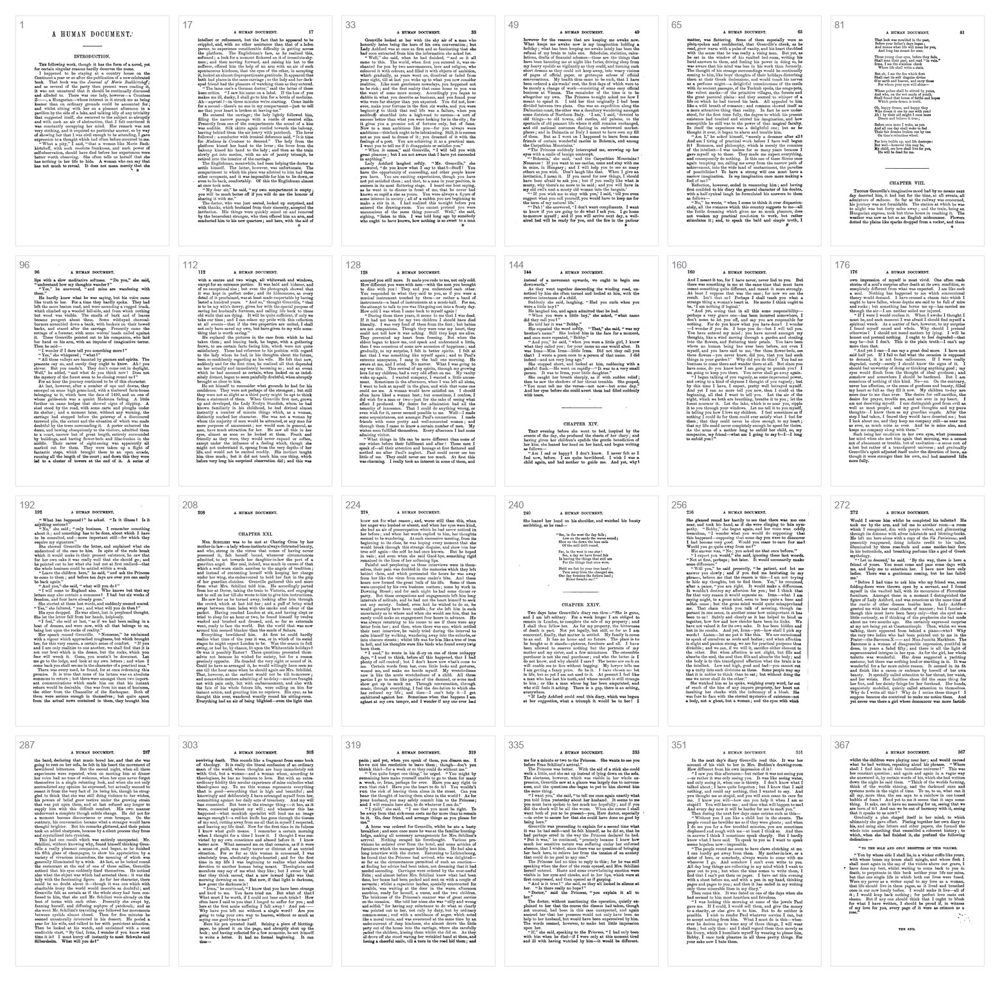

The Pipeline#
The CV/OCR pipeline turns the source scanned PDF into the canonical OCR database
and the normalized page images that the npm packages ship. Consumers of
humument never run this — the data is published on npm. You only need the
pipeline to rebuild the dataset (e.g. after swapping the source scan or changing
the OCR logic).

The stages below across six pages — one row each: 01a raw scan → 01c deskewed & cropped → 01d normalized B&W → 01e + 02 word-rarity features + whitespace graph. Read a column to follow one page through the pipeline.
Requirements#
- macOS — OCR is done locally with Apple Vision (via
ocrmac); there are no cloud APIs and no Linux path. uv— the Python project (pyproject.toml) is managed with uv (Python ≥ 3.11).
Running it#
From the repo root:
uv sync
make pipeline # stages 01a → 03, in order
make verify # validate + pytest + typecheck (the data-contract gate)
make pipeline runs the numbered stages in order; make verify runs the gate
that protects the data contract (validate + test + typecheck).
Page numbering#
The DB is keyed by the printed book page (page_num, 1–367), which equals
the A Humument page. The PDF scan has front matter and a trailing publisher
catalogue, so the raster index differs from the printed page by a constant:
This offset is applied in exactly one place — stage 01a. Afterwards every
artifact and DB row is keyed by printed page, so all later stages and the editor
work in printed-page space with no offset awareness. (All of this lives in
pipeline/config.py:
OUTPUT_WIDTH/HEIGHT = 1400×2100, DPI = 300, the B&W cleanup knobs, etc.)
Stages#
Configured in pipeline/config.py;
run by the Makefile.
| Stage | Script | Does |
|---|---|---|
01a rasterize |
01a_rasterize.py |
PDF → data/pages/*.jpg at 300 dpi. The only place PAGE_OFFSET is applied. |
01b ocr_raw |
01b_ocr_raw.py |
Raw macOS Vision OCR → data/humument.db. |
01c correct_tilt |
01c_correct_tilt.py |
Deskew, align (anchoring the running header), and re-OCR → data/pages_corrected/. |
01d normalize_color |
01d_normalize_color.py |
B&W high-contrast normalization, shadow removal, flat-field, text-bbox crop → data/pages_normalized/. |
01e features |
01e_features.py |
Tag every word with POS, lemma, frequency, rarity (spaCy + wordfreq). |
02 whitespace_graph |
02_whitespace_graph.py |
Whitespace gutters, word docks, and the routing graph used to draw rivers of type. |
03 export_web |
03_export_web.py |
Export the DB to static JSON under output/db/ (catalog, per-page pNNNN.json + gzipped twin, search index). This is the payload published as humument-data. |

The output of stage 01d — 367 normalized B&W pages (a sample spread across the
book), published as humument-images.
The canonical database#
data/humument.db is a SQLite database, keyed by page_num (1–367), and is
the source of truth. Its six tables — pages, words, page_corrections,
page_gutters, word_docks, and page_graph — are exactly what stage 03
serializes to JSON. See Data Format for the
schema.
Because Apple Vision OCR is nondeterministic, the DB is versioned in the repo via git-lfs rather than regenerated; re-running the pipeline won't reproduce it byte-for-byte.
Verification#
make verify is the data-contract gate, and
pipeline/validate_db.py
is the heart of it — a read-only check of every invariant the editor relies on:
page_corrections.page_numis exactly the contiguous content range (this is what makespage_num== printed page == A Humument page);pagesdimensions equal the normalized canvas and the actual JPEG dims (word-overlay alignment depends on it);- NLP columns, graph, gutters, and docks are all populated and JSON-parseable;
- the page number printed in each running header matches
page_num(≥ 85%) — objective proof of the page correspondence.
It exits non-zero on failure, so it doubles as the CI/pytest gate
(pipeline/tests/).
Publishing the data packages#
data-packages/sync.mjs copies the pipeline outputs into the two data packages
at publish time (output/db → humument-data; data/pages_normalized →
humument-images). See npm Packages.